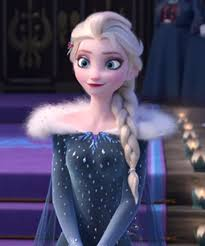
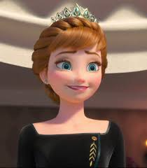
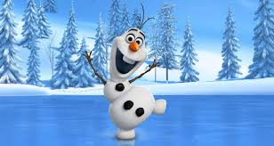
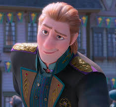
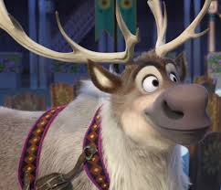
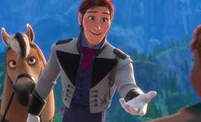
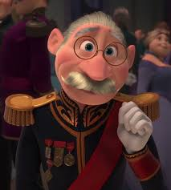
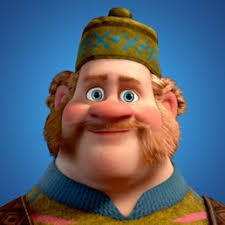

Cast : Frozen

"Elsa"
The Snow Queen of Arendelle, born with magical ice powers.

"Anna"
Elsa's younger sister, who embarks on a journey to bring Elsa back after she accidentally plunges their kingdom into eternal winter.

"Olaf"
A friendly and optimistic snowman brought to life by Elsa's magic.

"Krishoff"
An ice harvester who helps Anna on her journey to find Elsa.

"Sven"
Kristoff's loyal reindeer companion.

"Hans"
A prince from the Southern Isles who initially seeks to marry Anna but later reveals a more sinister plan.

"Duke of Weselton"
A trade partner of Arendelle, who tries to exploit the kingdom after Elsa's powers are revealed.
